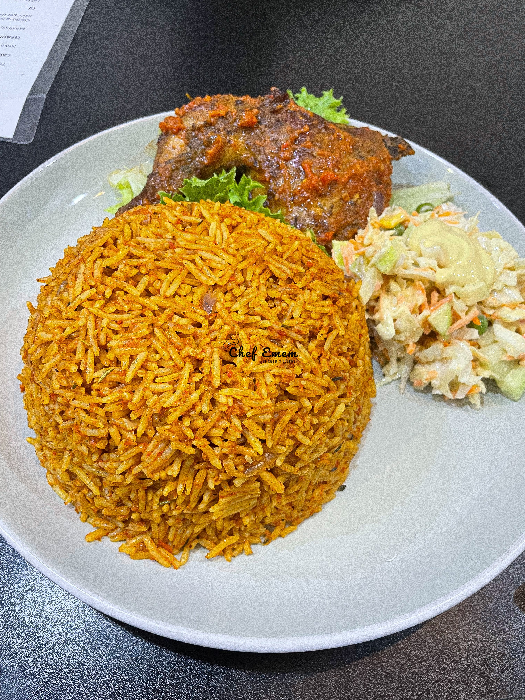

Jellof Rice
Home

Image from Chef Emem on X
Description
Ingredients
This recipe yields 8 servings
Tomato Sauce:
- 1 large, ripe tomato, cored and quartered
- 1 large red bell pepper, seeded and roughly chopped
- 1 whole habanero pepper, stem removed
- 1 whole Fresno chili, or jalapeño, stem removed
- 4 cloves garlic, peeled
- 1 tablespoon minced ginger
- 2 cups water
Rice:
- 1/3 cup olive oil
- 1 red onion, diced
- 1 teaspoon salt, plus more to taste
- 1/4 cup tomato paste
- 2 tablespoons smoked paprika
- 1 teaspoon curry powder
- 1 teaspoon cumin
- 1 teaspoon dried thyme
- 1/2 teaspoon freshly ground black pepper
- 1/4 teaspoon turmeric
- 2 ¼ cups basmati rice
- 1 bay leaf
- 1 tablespoon chicken bouillon paste
- 1/4 cup chopped green onion for garnish (optional)
- 1/4 cup chopped cilantro, for garnish (optional)
Steps
- Combine tomato, red bell pepper, habanero pepper, fresno chili, garlic, ginger, and water in a blender for the sauce.
- Blend on high until smooth and set aside. Heat olive oil in a saucepan over medium heat.
- Add onion and salt and sauté until onion starts to soften, 4 to 5 minutes.
- Clear space in the middle of the pan, add tomato paste, and sauté for 2 to 3 minutes.
- Season with paprika, curry powder, cumin, thyme, pepper, and turmeric; continue cooking for 1 to 2 minutes until everything is well combined.
- Turn off the heat, and stir in the rice, making sure every grain of rice is coated with the oil-tomato mixture.
- Add bay leaf and chicken bouillon paste.
- Turn heat to high, stir in tomato sauce, and bring to a vigorous simmer.
- Cover with a tight fitting lid, reduce heat to medium-low, and simmer for 20 minutes.
- Do not remove the lid or stir rice.
- Turn off heat after 20 minutes, and set the timer for 12 minutes.
- Allow rice to sit and do not remove the lid.
- After the 12 minutes are up, remove lid, and fluff rice with a fork, separating all the grains.
- Serve garnished with green onions and chopped cilantro.